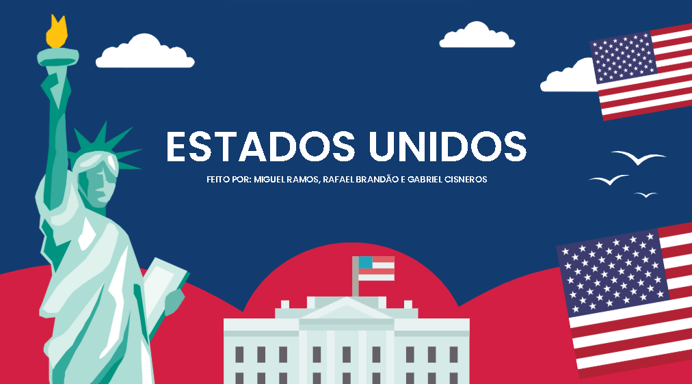

Fazer a atividade sobre o conflito entre Rússia e Ucrânia ajudou a entender melhor as causas e consequências dessa guerra. Mesmo sendo um tema complexo, foi importante refletir sobre os impactos para a população e o cenário político mundial.
Acessar atividade

Realizar o trabalho sobre as guerras que os Estados Unidos participaram foi interessante para analisar como esse país atua em conflitos ao redor do mundo. A atividade permitiu perceber os motivos políticos e econômicos por trás dessas ações, além das consequências para os envolvidos.
Acessar atividade